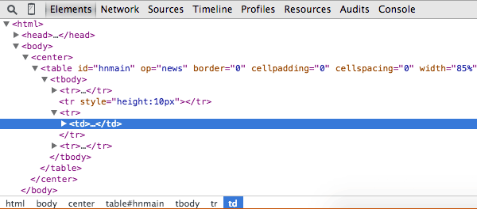

The Chrome Developer Tools (DevTools for short), are a set of web authoring and debugging tools built into Google Chrome.The DevTools provide web developers deep access into the internals of the browser and their web application.
We can use the DevTools to:
- efficiently track down layout issues
- set JavaScript breakpoints
- get insights for code optimization.
Steps to access the DevTools: To access the DevTools, open a web page or web app in Google Chrome.Now you can either:
- Select the Chrome Menu
 at the top-right of your browser window, then select Tools > Developer Tools. OR
at the top-right of your browser window, then select Tools > Developer Tools. OR
- Right-click on any page element and select Inspect Element. OR
- Use Ctrl + Shift + I (or Cmd+Opt+I on Mac) to open the DevTools.
DevTools Window's Layout
The DevTools are organised into task-oriented groups in the toolbar at the top of the window. Each toolbar item and corresponding panel let you work with a specific type of page or app information, including DOM elements, resources, and sources.

The layout above shows some important categories or group of tools available:
- Elements
- Resources
- Network
- Sources
- Timelines
- Profile
- Audit
- Console
To deal with each TOOL:
• Element
Elements panel will give us the structured information about the current page like:
- To see everything in one DOM tree, and allows inspection and on-the-fly editing of DOM elements.
- Inspect HTML & CSS .For eg: if you want to know Html id of some element and the value associated with it.
- Test and edit different layouts and also you can live-edit CSS
• Resource
Using the Resource tab, lets you inspect resources that are loaded in the inspected page and lets you able to see and interact with the HTML files, Scripts, Database, Local Storage, Cookies, AppCache etc.
• Network
Using the Network we can able get the information about each network operation in our application, including detailed timing data, HTTP request and response headers, cookies, WebSocket data and the required resource files to load the page like HTML, Script, CSS and the images.To Identify and address those requests taking longer than expected is an essential step in optimizing your page.
• Sources
The Source panel lets us to view source files like HTML, CSS and JS. In addition:
- Using Source tab we can see all the sources which are associated with the page/application.
- We can add the source files and edit the files on the go.
- We can also drag/drop the files from the file location to edit on the go. So your browser will work as like the IDE.
• Timeline
Using this we can record and analyze the activity in our applications. Also we can check the performance issues if we have anything in our application.
We are able to see the step by step actions like how the application executes the resource files, how it renders/paint the pages, and how it hits the service calls. We can analyze how much it takes to load and execute the functions when an event is fired by the user.
In short, all events, from loading resources to parsing JavaScript, calculating styles, and repainting are plotted on a timeline.
• Profile
The Profiles tool helps you capture and analyze the performance of JavaScript scripts. For example, you can learn which functions take the most time to execute. It lets you profile the execution time and memory usage of a web app or page.
• Audit
The Audit tool is like having your own web optimization consultant sitting next to you. This tool can analyze a page as it loads and provide suggestions and optimizations for decreasing page load time and increase perceived (and real) responsiveness.
• Console
From the Console, you can enter arbitrary JavaScript and programmatically interact with your page.